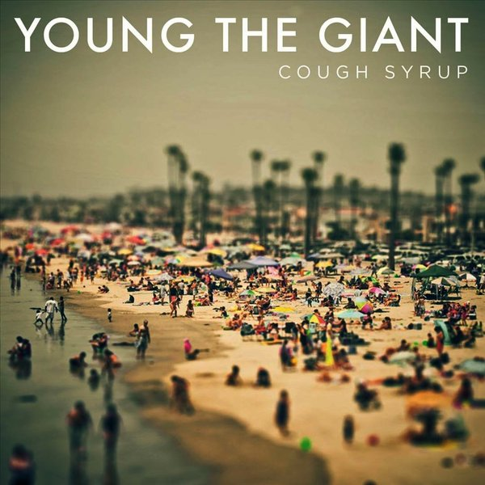
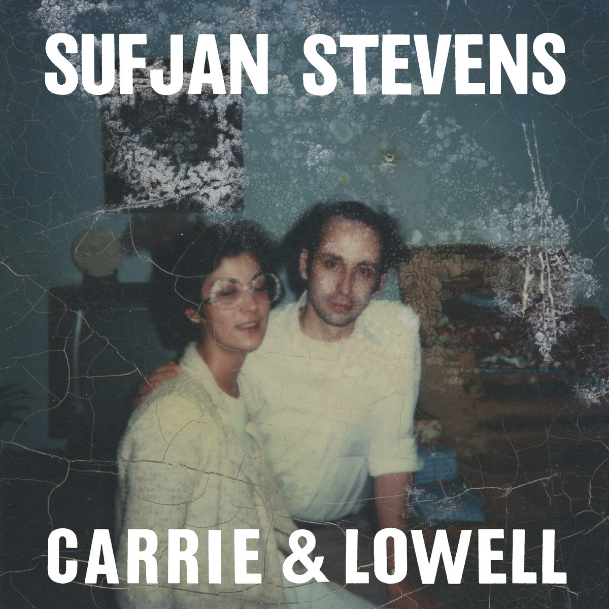
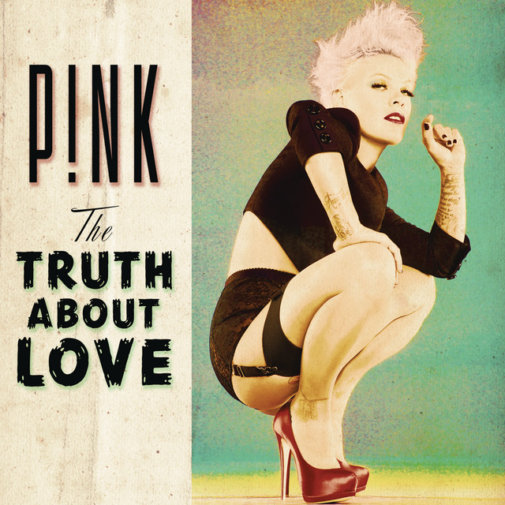
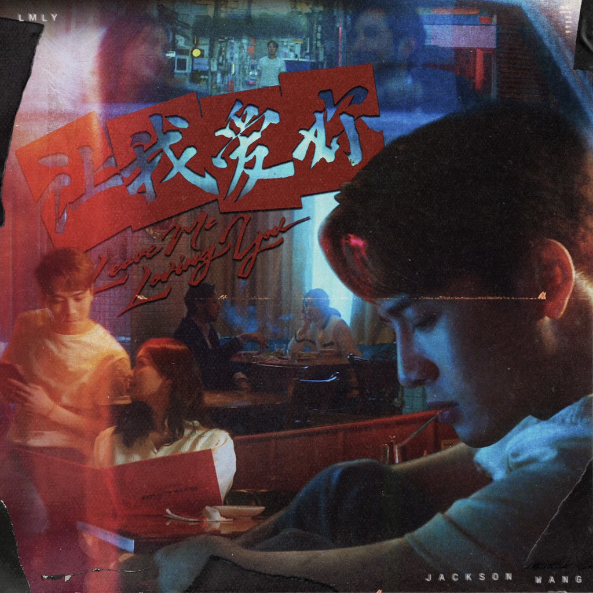
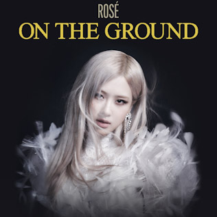
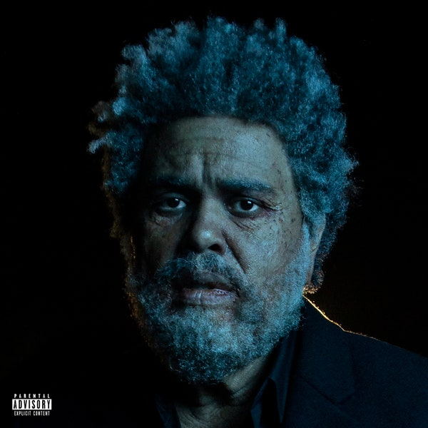
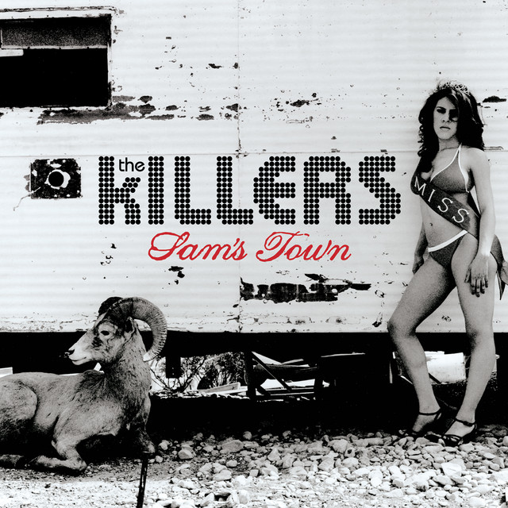
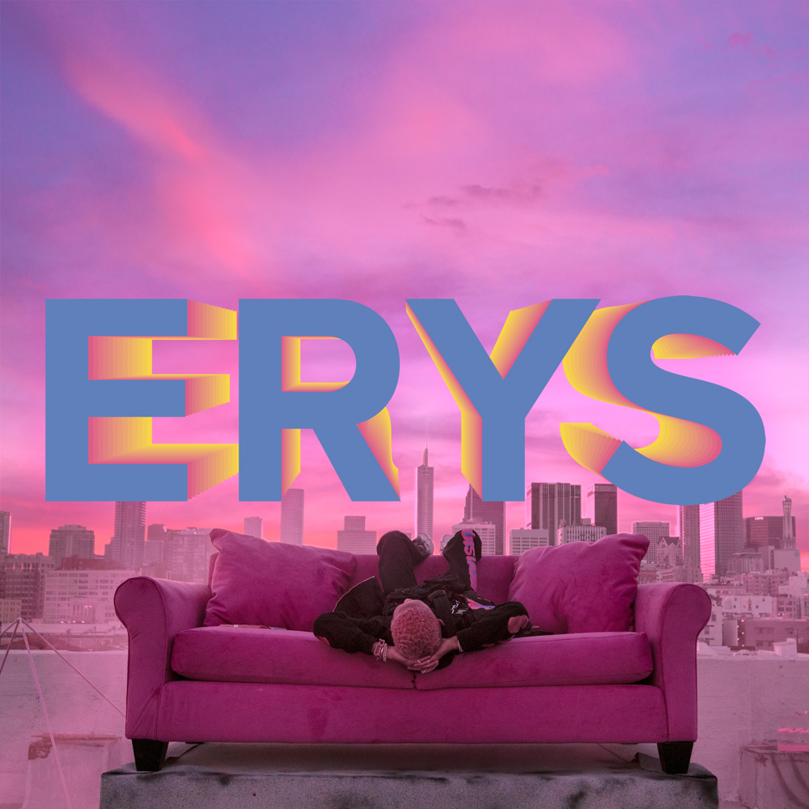

My top 10 music
As If It's Your Last - Blackpink

"As If It's Your Last" is a song recorded by South Korean girl group Blackpink, released on June 22, 2017 by YG Entertainment. It was written by Teddy Park, Brother Su, Choice37, Future Bounce, Lydia Paek and produced by Teddy Park. Musically, it has been described as a synth-pop, classical, house, reggae and moombahton song, whose lyrics talk about finding and losing love. Commercially, the song debuted atop the Billboard World Digital Songs chart, at number two on K-pop Hot 100 and at number 3 on the Gaon Digital Chart. The single sold more than 2.5 million copies in South Korea.
Cough Syrup - Young the Giant
"Cough Syrup" is a song by American alternative rock band Young the Giant from their eponymous debut album. It was composed when the band was named The Jakes, and first appeared on their 2008 EP Shake My Hand. Released by Young The Giant as a single in 2011, the song peaked at number three on the Billboard Alternative Songs chart.
Death With Dignity - Sufjan Stevens
"Spirit of my silence I can hear you, but I'm afraid to be near you
And I don't know where to begin
I don't know where to begin"
Just Give Me a Reason - P!nk ft. Nate Ruess
"Just Give Me a Reason" is a song recorded by American singer and songwriter Pink, featuring Fun's lead singer Nate Ruess. The song was chosen as the third single from Pink's sixth studio album, The Truth About Love (2012). Jeff Bhasker assisted the artists in writing the song and is also the producer. "Just Give Me a Reason" is a pop ballad about the desire to hold on to a relationship even when it appears to be breaking down.
LMLY - Jackson Wang
"LMLY" an abbreviation of “Leave me love you,” is the second single released by Jackson Wang in 2021, following his Mandarin single “Alone.”
Memories - Maroon 5

"Memories" is a song by American band Maroon 5, released through 222 and Interscope Records on September 20, 2019, as the lead single from the band's seventh studio album Jordi.”
On The Ground - Rosé
"On the Ground" is the debut single by Korean-New Zealand singer and Blackpink member Rosé. It was released on 12 March 2021 by YG Entertainment as the lead single from her debut single album, R. It was written by Rosé alongside Amy Allen, Raúl Cubina, Jon Bellion, Jorgen Odegard and Teddy Park, and was produced by the latter three alongside Ojivolta and 24. The song is an electropop, pop rock and pop track with synth-pop elements. Its lyrics reflect Rosé's rise to fame, from singing and playing piano in her childhood home to flying to South Korea and forming one of K-pop's biggest acts.
Out of Time - The Weeknd
Sampling the song Midnight Pretenders by Tomoko Aran, Out of Time features a distressed Abel, as he realizes the mistakes he made in his relationship and croons for a second chance on this sleek, sensual sounding cut.
Read My Mind - The Killers
"Read My Mind" is a song by American rock band the Killers. It was released on February 13, 2007, as the third single from their second studio album, Sam's Town (2006). It peaked at number 62 on the Billboard Hot 100. It also charted at number 15 on the UK Singles Chart.
Summertime in Paris - Jaden Smith ft. Willow
Jaden and his sister Willow croon in autotune over falling in love in the summertime. This track originally was performed at Coachella during Jaden’s first weekend.